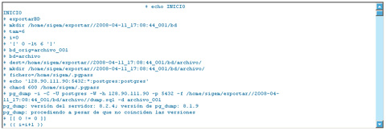

|
Mediante el proceso de monitorización, el usuario administrador podrá conocer el estado de sus procesos de exportación, importación y clonación (compuesto por una exportación y una importación).
Descripción de elementos:
1) Procesos de exportación: Desplegable con los procesos de exportación existentes en el sistema. Seleccione uno de los procesos para monitorizarlo.
2) Procesos de importación: Desplegable con los procesos de importaciónexistentes en el sistema. Seleccione uno de los procesos para monitorizarlo. 3) Contenido de la monitorización: En la parte central de la pantalla se visualizará el contenido del log asociado al proceso seleccionado. En la parte superior se mostrará un aviso indicando si el proceso se encuentra en estado de ejecución o si ya ha finalizado.  4) Actualización de la monitorización: En la parte inferior, el usuario tiene la posibilidad de actualizar automáticante el log del proceso cada x segundos (introducir cada cuantos segundo se desea actualizar, con un valor mínimo de 10 segundos, y pulsar el botón Actualizar). Este proceso de actualización sólo se realizará si el proceso seleccionado no ha finalizado. En caso de querer detener el proceso de actualización automática, deje vacío el campo de tiempo y pulse sobre el botón Actualizar 5) Salir: Pulse el botón Salir para finalizar el proceso de monitorización. Esta acción no cancela el proceso de exportación o de importación seleccionado. |
||||